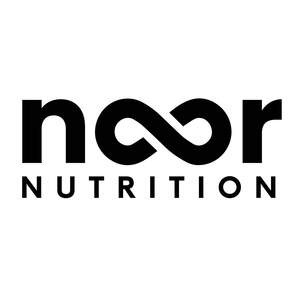

Trade Mark Journal No.2025/033 15 August 2025
UK00004243449 2 August 2025 (5,21,25,29,30,32,35)

- Class 5
- Adaptogen supplements; Amino acid supplements; Antioxidants; Collagen dietary supplements; Colostrum supplements; Creatine supplements; Cod liver oil; Dietary fibre supplements; Dietary supplements; Dietary supplement drinks; Dietary supplements consisting of vitamins; Dietary and nutritional supplements containing black seed oil; Edible oils for nutritional purposes; Edible oils for medicinal purposes; Effervescent vitamin tablets; Enzyme dietary supplements; Flaxseed oil dietary supplements; Food supplements; Gummy vitamins; Herbal supplements and herbal extracts; Meal replacement powders; Medium chain triglyceride dietary supplements; Mineral dietary supplements; Multi-vitamin preparations; Nootropic supplements; Nutritional supplements; Probiotic supplements; Protein dietary supplements; Protein supplements; Sea moss gels; Sea moss capsules; Raw sea moss; Sea moss supplements; Vitamin supplements. .
- Class 21
- Reusable water bottles sold empty; tumblers for use as drinking glasses; shakers for mixing nutritional supplements; reusable drinking vessels; plastic bottles sold empty; sports bottles sold empty; food containers; plastic containers for household or kitchen use; reusable plastic food storage containers; lunch boxes; meal prep containers; all being drinkware and containers used in connection with nutrition, fitness, and wellness.
- Class 25
- Clothing; Headgear; Articles of sports clothing; Sports footwear; Sports headgear; Athletic uniforms; Warm-up suits; Jogging suits; Tops; Vests; Shirts; T-shirts; Sweatshirts; Jackets; Hoodies; Sleeveless hoodies; Pullovers; Coats; Raincoats; Pants; Trousers; Shorts; Rainwear; Sweatpants; Sweaters; Shoes; Boots; Sneakers; Sandals; Socks; Swimwear; Swimming costumes; Swimming trunks; Swimming suits; Sunsuits; Scarves; Dressing gowns; Boxer shorts; Hats; Caps; Sun visors; Beanie hats; Bandanas; Sleepwear; Pyjamas; Slippers; Underwear; Wrist bands; Sweatbands; Head bands; Nightwear; Sleeping garments; Nightgowns; Nightdresses; One-piece suits; Beachwear; Beach clothing; Beach hats; Beach robes; Beach wraps; Beach footwear; Beach shoes; Beach cover-ups; Sun hats; Gloves; Belts; Knitwear; Jumpers; Neckwear; Robes.
- Class 29
- Almond butter; beef jerky; biltong; birds’ eggs and egg products; blended butter; butter; cheese; cheese products; coconut fat; coconut oil for food; compotes; cream powder; creamers for beverages; crisps; cured meat; dairy based dips; dairy products; dairy products and dairy substitutes; dairy spreads; dips; dried coconut; dried milk-based products for meal replacements; edible fats; edible nuts; edible oils; edible oils and fats; edible oils derived from fish; edible soy proteins; egg white powder; egg whites; egg yolk solids; egg yolks; eggs; extracts made from fish; extracts made from game; extracts made from meat; extracts made from poultry; extracts made from seafood; fish; fish jerky; fish preserves; fish, seafood and molluscs, not live; fruit and nut based snack-bars; fruit based snack food; fruit jelly spreads; fruit powders; fruit preserves; fruit salads; fruit, nut and seed mixes; fruit-based meal replacement bars; game; jams; jellies, jams, compotes, fruit and vegetable spreads; meat; meat and meat products; meat based, poultry based, fish based, dairy based, vegetable based and fruit based foodstuffs for use during exercise; meat extracts; meat preserves; meat-based snack foods; milk; milk and milk products; milk based beverages; milk powder for nutritional purposes; milk shakes; milk-based protein drinks; milk-based snacks.
- Class 30
- Breakfast cereals, porridge and grits; cereal bars; coffee; coffee-based beverages; coffee substitutes; edible ices; energy bars; food flavourings other than essential oils; green tea; high-protein cereal bars; honey; iced tea; protein-based confectionery; savoury sauces, chutneys and pastes; snack bars containing grains, nuts, fruit, chocolate or protein; sweets (candy), candy bars and chewing gum; syrups; tea; tea beverages; tea substitutes; non-alcoholic coffee and tea based drinks; bases for making milk shakes.
- Class 32
- Non-alcoholic beverages; water; mineral water; sparkling water; fruit drinks and fruit juices; vegetable juices; smoothies; energy drinks; isotonic beverages; energy gels and drinks; protein-enriched beverages; whey based protein drinks; fruit smoothies; fruit smoothies fortified with protein; nutritional, energy and protein drinks; beverages for meal replacement; non-alcoholic preparations for making beverages; flavouring syrups for making beverages; tablets for effervescing beverages; powders for effervescing beverages.
- Class 35
- Retail services, wholesale services, online retail services, and mail order services connected with the sale of nutritional supplements, dietary supplements, protein powders, vitamins, meal replacement products, beverages, healthy snacks, edible oils, natural remedies, clothing, drinkware including tumblers and shakers, plastic containers and lunch boxes; Provision of an online marketplace for buyers and sellers of health, fitness, and wellness-related products; Advertising, marketing and promotional services relating to health, fitness and wellness goods; Product demonstrations and product display services; Providing consumer product information and recommendations in the field of nutrition, fitness, and wellness; Commercial administration of the licensing of goods and services of others in the health and wellness sector.
NOOR NUTRITION LTD